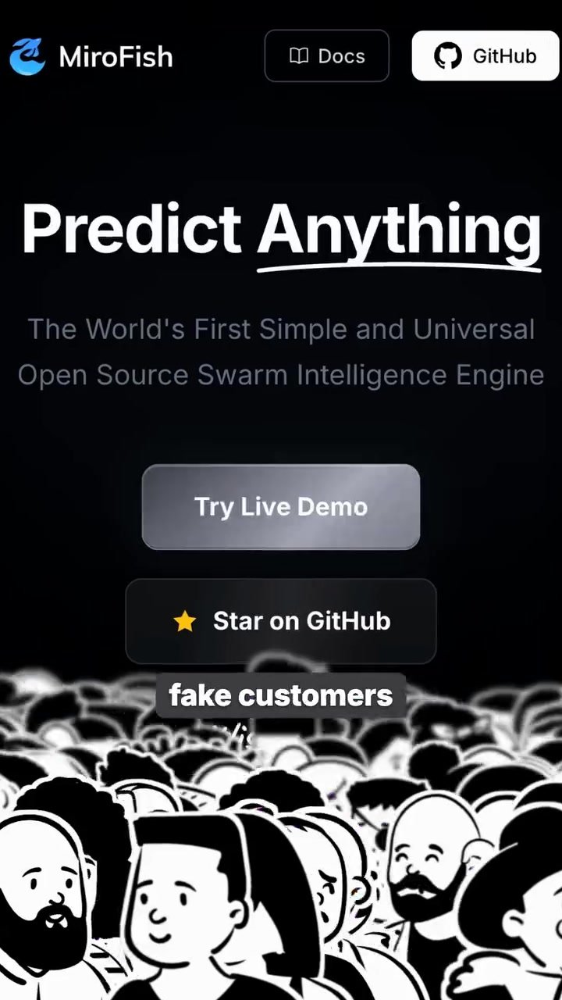
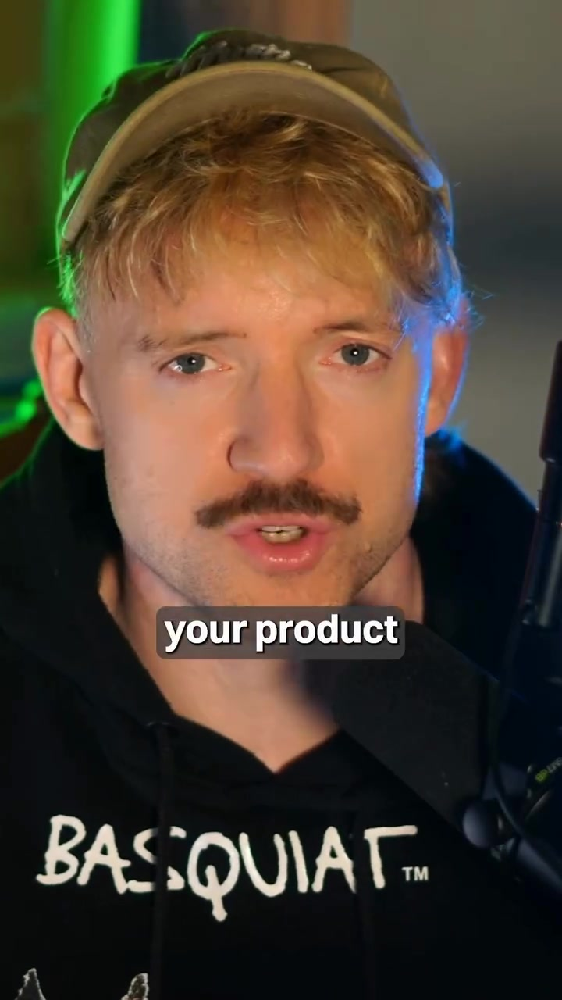

Product · Launch-Strategy
MiroFish: Pre-Launch Validation via Synthetic AI Customer Focus Groups
Founders typically test product launches on polite friends and family who soften critical feedback to avoid hurting feelings. MiroFish is an open-source tool that simulates a crowd of thousands of autonomous synthetic AI customer personas (varying across ages, occupations, disposable income brackets, and psychological purchasing biases). By submitting a landing page URL, pricing tier, or ad copy into MiroFish, founders receive unvarnished, ruthlessly honest conversion critiques before spending ad capital.
Video Visual Stills


How Synthetic Focus Groups Work
Rather than querying a single generic LLM instance ("Act like a customer"), the system instantiates hundreds of parallel agent personas with distinct financial constraints, skepticism levels, alternative tool loyalties, and cognitive biases.
- Value Proposition: The core promise and headline clarity.
- Pricing Elasticity: Testing $19/mo vs $49/mo vs $99/mo across different persona budgets.
- Objection Mapping: What specific skepticism causes synthetic prospects to bounce? (e.g. data security concerns, lack of refund terms, unclear onboarding).
Allows product teams to rewrite unclear copy, restructure pricing tiers, and address critical friction points in hours rather than burning weeks of live paid traffic discovering the same objections.